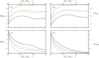
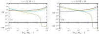

Effect of fuel mass fraction heterogeneity on the detonation propagation speed
Alberto Cuadra, César Huete & Marcos Vera
Grupo de Mecánica de Fluidos, Universidad Carlos III de Madrid
Introduction
Consider a fresh homogeneous mixture with an uniform flow whose Mach number satisfy the Chapman-Jouguet condition
\(\quad\quad\quad\quad\mathcal{M}_u>\mathcal{M}_{\rm cj}=\left(1+Q\right)^{1/2}+Q^{1/2}\),
where \(Q\) is the dimensionless heat release per unit mass. We can easily obtain the Rankine-Hugoniot jump conditions from the conservation equations and assuming a calorically perfect gas, namely \[\begin{equation*} \mathcal{R}_d = \frac{\rho_d}{\rho_u} = \frac{\left( \gamma + 1\right) {\cal M}_u^2}{\gamma {\cal M}_u^2 +1- \left[({\cal M}_u^{2}-1)^2 -4 Q {\cal M}_u^{2} \right]^{1/2}}, \end{equation*}\] \[\begin{equation*} \mathcal{P}_d = \frac{p_d}{p_u} =\frac{\gamma {\cal M}_u^2 +1+ \gamma\left[({\cal M}_u^{2}-1)^2 -4 Q {\cal M}_u^{2} \right]^{1/2}}{\gamma + 1}, \label{eq:Pd} \end{equation*}\] for density and pressure, respectively. However, What would happen in case we have a non-homogeneous mixture? A better understanding of this can help to design efficient supersonic combustors (Urzay 2018; Frolov et al. 2019). Figure 1 is a sketch of the problem posed. The wrinkling of the detonation front can come from two sources: density perturbations and/or heat release perturbations. This may have constructive or destructive interference as shown in Fig.2. Enhancement of the propagation speed has been observed in gaseous mixtures as a result of the turbulence induced by the detonation front wrinkling (Mi et al. 2017; Mi, Timofeev, and Higgins 2017; Meadows and Subramanian 2019; Prakash and Raman 2019).
Objectives
- Obtain 2D and 3D integral formulas for
numerical benchmarking. - Understand from a theoretical perspective the
effects on the propagation of the detonation.
Methods
- Formulate base-problem assuming fast-reaction model: Reactive Rankine-Hugoniot equations.
- Include mono-chromatic perturbations of the fuel mass fraction.
- Obtain weighted integrals considering an isotropic spectrum: Fourier analysis.
- Obtain corrections to Rankine–Hugoniot equations and speed propagation: Averaged turbulent conservation equations.

Figure 1: Sketch of the corrugated detonation front through a heterogeneous gaseous mixture, where the variation of the local fuel mass fraction satisfies \(\delta Yu| = |Yu - \langle Yu \rangle | \ll 1\) in order to apply linear theory. The detonation length \(\ell\) is assumed to be much smaller than the characteristic upstream length \(k_o^{-1}\).
![\label{Figure2}Variation of density (a) and heat release (b) with the fuel mass fraction for representative fuel-air mixtures. The dashed line represents the stoichiometric condition given by $Y_{u}=Y_{st}$ $(\phi = 1)$. Computations are given for hydrogen, methane, acetylene and propane at $300$ K and $10^5$ Pa in fresh conditions. The associated stoichiometric fuel mass fractions are $Y_{st}=0.0285$, $0.0552$, $0.0705$ and $0.0603$, respectively. The sketch depicted at the bottom shows the constructive and destructive interference for CH$_4$ (blue line) as consequence of the weak deviations of the fuel mass fraction.](Figures/Figure2_ICTAM_1.svg)
Figure 2: Variation of density (a) and heat release (b) with the fuel mass fraction for representative fuel-air mixtures. The dashed line represents the stoichiometric condition given by \(Y_{u}=Y_{st}\) \((\phi = 1)\). Computations are given for hydrogen, methane, acetylene and propane at \(300\) K and \(10^5\) Pa in fresh conditions. The associated stoichiometric fuel mass fractions are \(Y_{st}=0.0285\), \(0.0552\), \(0.0705\) and \(0.0603\), respectively. The sketch depicted at the bottom shows the constructive and destructive interference for CH\(_4\) (blue line) as consequence of the weak deviations of the fuel mass fraction.
Results
Assuming that the upstream non-homogeneous flow is isotropic, leaving the mathematical detail aside, they appears second order correction for the density, pressure and velocity downstream, namely
\[\begin{equation}
\dfrac{\langle\rho_d\rangle}{\langle\rho_u\rangle} = {\cal R}_d\left(1+\bar{\epsilon}^2 \delta {\cal R} \right),\quad \dfrac{\langle p_d\rangle}{p_u} = {\cal P}_d\left(1+\bar{\epsilon}^2 \delta {\cal P} \right),
\end{equation}\]
\[\begin{equation}
\dfrac{\langle u_d\rangle}{u_u} = \dfrac{1}{{\cal R}_d}\left(1+\bar{\epsilon}^2 \delta {\cal U} \right),
\end{equation}\]
where the non-uniformity parameter
\[\begin{equation}
\bar{\epsilon}=\sqrt{1-\frac{\langle Y_u\rangle^2}{\langle Y_u^2\rangle}}
\end{equation}\]
is introduced to characterize the average fuel mass fraction fluctuations. Summarizing some results, roughly we see that density is lower, pressure is lower and velocity is higher.
![\label{Figure3}Left: Sketch for the Rankine-Hugoniot curves. In blue and orange we have the one-dimensional curve. Right: Computations for $\gamma=1.2$, $\mathcal{M}_u = 1.2\mathcal{M}_{
m cj}$, $Q = 1$, $H = [-1:1]$ and $W = [-1:1]$.](Figures/Figure3.svg)
Figure 3: Left: Sketch for the Rankine-Hugoniot curves. In blue and orange we have the one-dimensional curve. Right: Computations for \(\gamma=1.2\), \(\mathcal{M}_u = 1.2\mathcal{M}_{ m cj}\), \(Q = 1\), \(H = [-1:1]\) and \(W = [-1:1]\).

Figure 4: Left: Three-dimensional second-order correction to the RH jump conditions (a) \(\delta \mathcal{R}\), (b) \(\delta \mathcal{P}\), (c) \(\delta \mathcal{U}\), and (d) \(\delta \mathcal{M}\) as a function of the overdrive parameter \(\mathcal{M}_u/\mathcal{M}_{\rm cj}-1\). Computations correspond to
\(\gamma=1.2\), \(Q = 1\), and \(|W|\gg|H|\) (black line), \(|H|\gg|W|\) (green line), \(W=H\) (orange line) and \(W=-H\) (blue line).

Figure 5: Left: Three-dimensional second-order correction of the detonation propagation velocity \(\delta \mathcal{S}\), according to \(\left.\delta {\cal S}\right|_{\delta\langle \mathcal{M}_d\rangle=0}\), as a function of the overdrive parameter \(\mathcal{M}_u/\mathcal{M}_{ m cj}-1\). Computations are provided for \(\gamma= 1.2\), \(\tilde{Q} = 1\) (a) and \(\tilde{Q} = 10\) (b) evaluated for \(|W|\gg|H|\) (black line), \(|H|\gg|W|\) (green line), \(W=H\) (orange line) and \(W=-H\) (blue line).
Conclusion
| In conclusion the flow given by the perturbation is amplifying the expansion of the hot products in the combustion process by the turbulent properties. Detonations of heterogeneous gaseous mixture have faster propagation speeds compared with the homogeneous case because the turbulent flow downstream is over-expanded. |
References
Frolov, SM, VS Aksenov, VS Ivanov, IO Shamshin, and AE Zangiev. 2019. “Air-Breathing Pulsed Detonation Thrust Module: Numerical Simulations and Firing Tests.” Aerospace Science and Technology 89: 275–87.
Meadows, Joseph W, and Sathyanarayanan Subramanian. 2019. “Novel Approach for Modeling Non-Premixed Rotating Detonation Engine Using a 2-d CFD Analysis.” In AIAA Propulsion and Energy 2019 Forum, 4130.
Mi, XiaoCheng, Andrew J Higgins, Hoi Dick Ng, Charles B Kiyanda, and Nikolaos Nikiforakis. 2017. “Propagation of Gaseous Detonation Waves in a Spatially Inhomogeneous Reactive Medium.” Physical Review Fluids 2 (5): 053201.
Mi, XiaoCheng, Evgeny V Timofeev, and Andrew J Higgins. 2017. “Effect of Spatial Discretization of Energy on Detonation Wave Propagation.” Journal of Fluid Mechanics 817: 306–38.
Prakash, Supraj, and S Raman. 2019. “Detonation Propagation Through Inhomogeneous Fuel-Air Mixtures.” In International Colloquium on the Dynamics of Explosions and Reactive Systems, 81.
Urzay, Javier. 2018. “Supersonic Combustion in Air-Breathing Propulsion Systems for Hypersonic Flight.” Annual Review of Fluid Mechanics 50: 593–627.